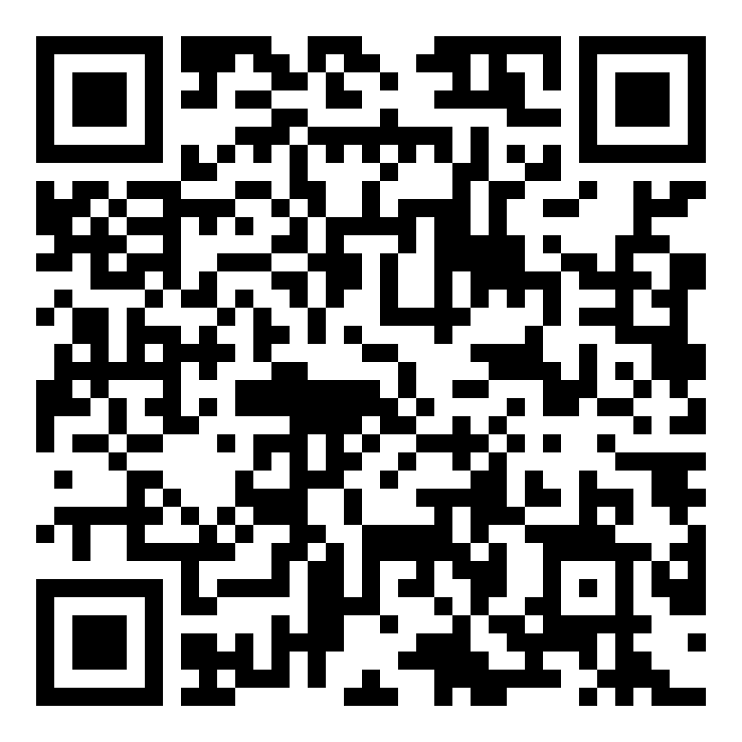

השיחה
לפני שמתחילים
💬
שיחה, לא הרצאה
כל אחד מדבר מהמקום שלו: מהכיתה, מהחדר של המנהלת, מהבית.
⚖️
אין נכון ולא נכון
מעניינים אותנו גם הספקות, גם מה שמפחיד, גם מה שמלהיב.
🎙️
אנחנו מקליטים
כדי שאחרי ההפסקה נעבוד עם מה שאמרנו כאן.
סרטון
לפני המילים
מתי נכון להכניס את הבינה לחשיבה?
סבב א'
מוטיבציה תלוית הקשר
אותו אדם, מוטיבציות אחרות - מה מערך המוטיבציות שלכם כשאתם בבית, ומה מערך המוטיבציות כשאתם בעבודה?
ובבית הספר: בשביל מה בכלל התכנסנו? מה המשימה?
סבב ב'
שלושה שחקנים, שלוש מערכות מוטיבציה
מהם הגורמים שמגבירים מוטיבציה, ומהם הגורמים שמדכאים ומפחיתים מוטיבציה, לכל אחד מהשחקנים האלו?
סבב ג'
הבינה נכנסת למשחק
איך הבינה המלאכותית השפיעה על המוטיבציה שלכם בעבודה?
סבב סגירה
משפט אחד מכל אחד:
מה אני לוקח מהשיחה הזו?
מה עשינו עכשיו
"אנושי אנושי מקדים לאנושי בינתי"אהוד נורי
עשינו1
בירור אנושי
שיחה על המוטיבציות וההקשר שלנו, לפני שפותחים מסך
←
2
תיעוד
ההקלטה הופכת לטקסט שאפשר לעבוד איתו
←
3
מחוון ובינה
הידע המקצועי ומה שאמרנו כאן, יחד באותה מחברת
←
4
פרקטיקות
לכיתה שלי, לבית הספר שלי
מה השתנה
משנה שעברה לשנה הזו
שנה שעברה
מנגנון נוירופדגוגי + נושא השיעור
↓
הבינה בונה מערך שיעור
גשר בין התיאוריה לפרקטיקה
השנה
מנגנון + השיחה שלנו + ההקשר של בית הספר
↓
הבינה חושבת איתנו על פרקטיקות
קודם פרקטיקות כלליות, אחר כך הכיתה הספציפית
לא פקודה ותשובה - שיחה
הפסקה
10:00
בינתיים: ההקלטה הופכת לטקסט ונכנסת למחברת
הדגמה
המחברת: שני מקורות, שיחה אחת
📄
מחוון המוטיבציה
מנגנוני הגמול והצפי המוחי: הידע המקצועי
🎙️
השיחה שלנו
מה שאמרנו כאן על בית הספר שלנו: ההקשר האנושי
↓
מחברת ג'מיני (לשעבר נוטבוק אל-אם)
כיוונון של הבינה לבית הספר שלנו - לא תשובות כלליות
הדגמה
לברר איתה, לא לבקש ממנה
1לפני שאת מציעה משהו: מה חוזר שוב ושוב בשיחה שלנו, ומה חסר בה?
2חברי בין מה שאמרנו לבין העוגנים של המחוון. איפה יש התאמה, ואיפה יש מתח?
3שאלי אותי שלוש שאלות על הכיתה שלי, ורק אחרי שאענה הציעי שלוש פרקטיקות קטנות למחר בבוקר.
קצריהרחיביאני לא מסכים, כי...לא הבנתי, נסי שוב
עכשיו אתם
הנחיות לתרגול
- סרקו את הברקוד: בתיקייה המחוון והקלטת השיחה. הורידו את שניהם.
- פתחו מחברת חדשה, והעלו את שני הקבצים כמקורות:notebook.google.com
- בחרו עוגן אחד מהמחוון. לא את כולו.
- ספרו לה בשתי שורות על ההקשר. מנהלות: בית הספר. מורות: הכיתה.
- צאו עם שלוש פרקטיקות שלא הכרתם. נשתף בסבב הסיכום.

התיקייה עם המחוון וההקלטה
סיכום
מה לוקחים מכאן
🔁
דרך עבודה
קודם בינינו, אחר כך הבינה - עם המחוון ועם מה שאמרנו.
✅
שלוש פרקטיקות
לכיתה שלי או לבית הספר שלי, לנסות כבר מחר.
המפגש הבא: רביעי 16.12 · זיכרון והקשר, והנדסת שאלות